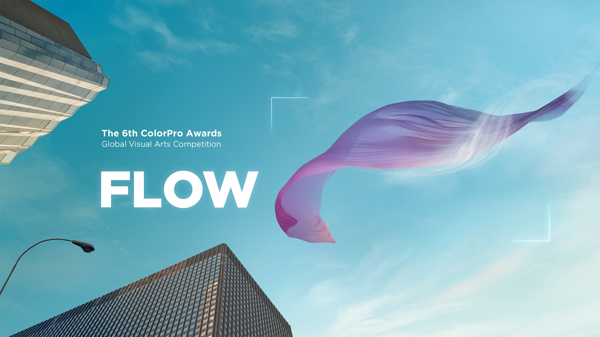
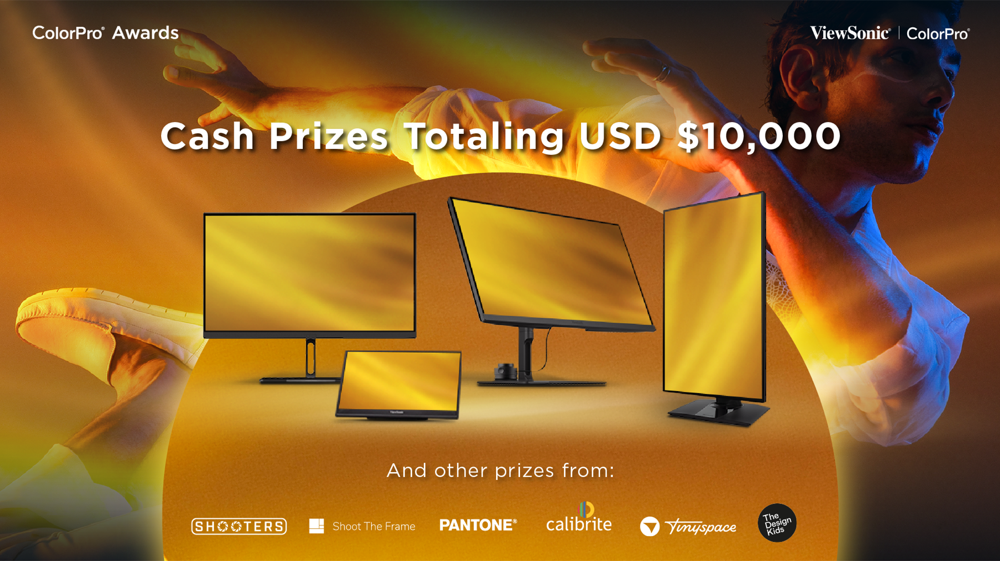
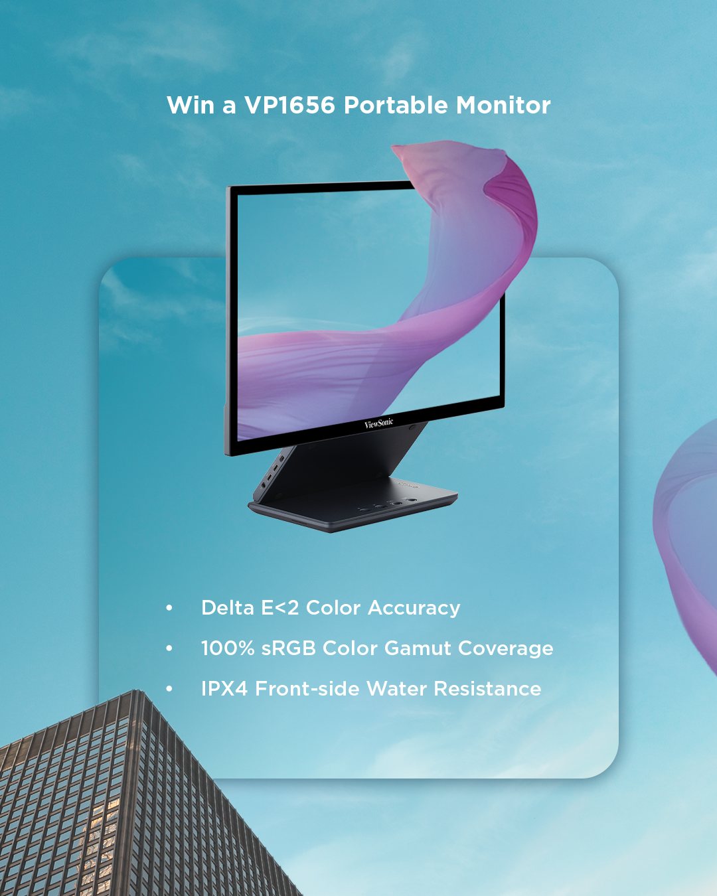
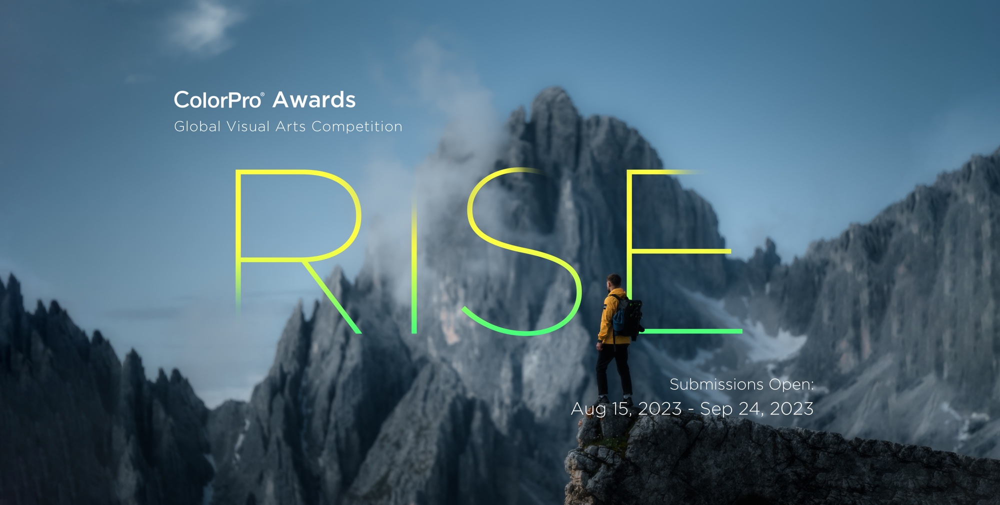
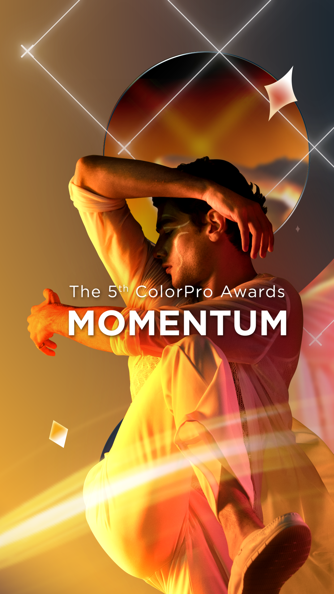
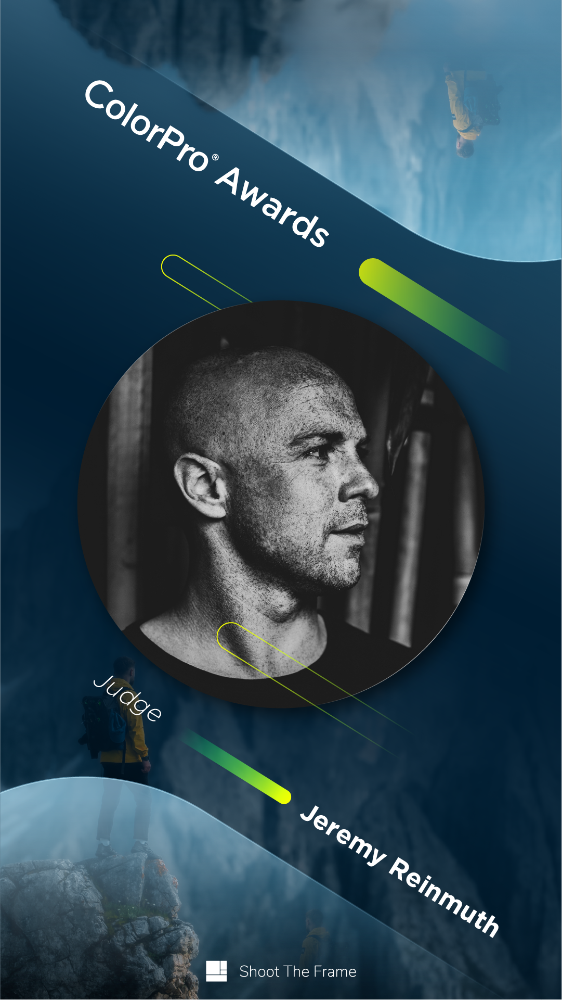
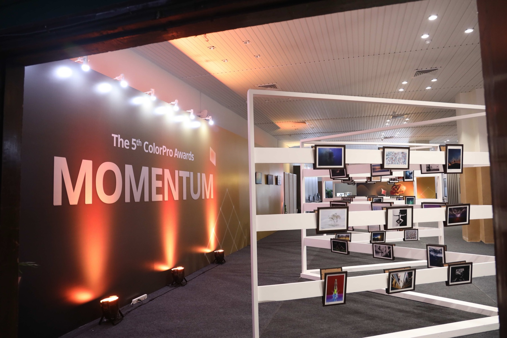
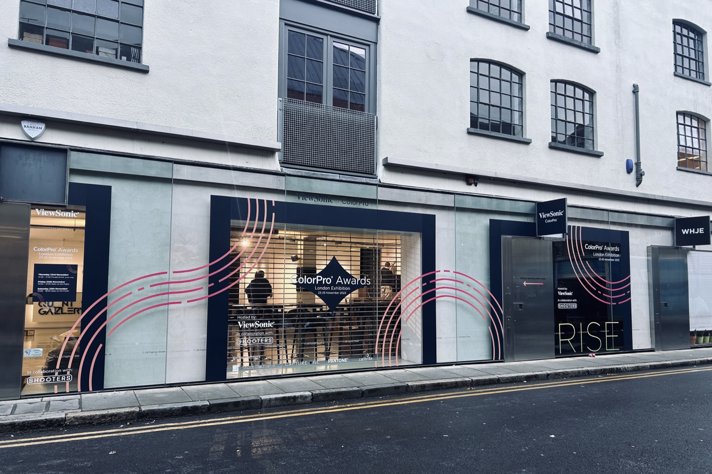

ColorPro Awards.
Transformed ViewSonic's professional display lineup into a global creative platform — bringing together artists, storytellers and industry partners through immersive experiences that turned inspiration into real-world brand and product engagement.

The Problem
ViewSonic wanted to build more than a traditional marketing campaign for its ColorPro professional displays.
The challenge was creating a globally recognized platform that could connect with creators, inspire community participation and strengthen relationships with channel partners — all while driving real-world product demand.
The campaign also needed to extend beyond digital advertising into immersive, in-person experiences that showcased the power of the product firsthand.

The Solution
ViewSonic launched the ColorPro Awards, a global creative competition built around inspiring annual themes like “FLOW,” “MOMENTUM,” and “RISE.” The campaign invited photographers, filmmakers, and digital artists from around the world to submit original work while engaging audiences through paid media, social content, influencer partnerships, tutorials and community voting experiences.
To bring the platform to life, ViewSonic hosted international award ceremonies and traveling exhibitions across key global markets. These events transformed digital artwork into immersive physical showcases, giving creators, resellers, distributors and enterprise customers hands-on experiences with ColorPro displays. By combining creator storytelling with experiential marketing, the campaign created a seamless bridge between brand inspiration and product engagement.






The Live Events
To turn the awards into something audiences could touch, ViewSonic took ColorPro on the road. International ceremonies and traveling exhibitions across the UK, India, Thailand, and Vietnam transformed each year's winning work into immersive physical showcases — where creators, resellers, distributors, and enterprise customers could see the displays do exactly what the winning artists had asked of them. Each stop combined gallery, ceremony, and product demo into a single experience, turning brand inspiration into hands-on engagement.


2026 FLOW · Live event
The Results
The ColorPro Awards evolved into a global ecosystem that strengthened both brand affinity and business growth.
The campaign generated thousands of submissions from more than 100 countries, built an engaged, international and creative community, which helped position ViewSonic as a leader in creative technology.
At the same time, the platform increased visibility for ColorPro displays, strengthened reseller and partner relationships and created meaningful opportunities for product demonstrations and demand generation.
By integrating online engagement with offline experiences, the campaign successfully moved audiences from inspiration to participation to product interaction — delivering impact across both B2C and B2B audiences.